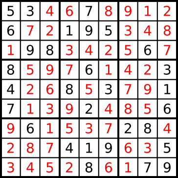

Sudoku Solver¶
Sudoku is a logic-based number-placement puzzle. The objective is to fill a 9×9 grid with digits so that each column, each row and each 3×3 sub-grid contains all of the digits from 1 to 9. The puzzle creator provides a partially completed grid, which typically has a unique solution.
For more information about this game, you should report to this site.
For example, the following grid

gives the result:
A puzzle is represented as a list of lists with digits. A zero value means that the value hasn’t been set.
Input: The initial 9x9 grid composed by integers as a list of lists.
Output: The result of the sudoku as a list of lists.
Example:
checkio([[5, 0, 0, 7, 1, 9, 0, 0, 4],
[0, 0, 1, 0, 3, 0, 5, 0, 0],
[0, 0, 0, 0, 0, 0, 0, 0, 0],
[0, 8, 5, 9, 7, 2, 6, 4, 0],
[0, 0, 0, 6, 0, 1, 0, 0, 0],
[0, 2, 6, 3, 8, 5, 9, 1, 0],
[0, 0, 0, 0, 0, 0, 0, 0, 0],
[0, 0, 3, 0, 5, 0, 2, 0, 0],
[8, 0, 0, 4, 9, 7, 0, 0, 6]]) == [[5, 6, 8, 7, 1, 9, 3, 2, 4],
[9, 7, 1, 2, 3, 4, 5, 6, 8],
[2, 3, 4, 5, 6, 8, 7, 9, 1],
[1, 8, 5, 9, 7, 2, 6, 4, 3],
[3, 9, 7, 6, 4, 1, 8, 5, 2],
[4, 2, 6, 3, 8, 5, 9, 1, 7],
[6, 1, 9, 8, 2, 3, 4, 7, 5],
[7, 4, 3, 1, 5, 6, 2, 8, 9],
[8, 5, 2, 4, 9, 7, 1, 3, 6]]
Precondition:
Each test case has only one unique solution.∀ x ∈ puzzle : 0 ≤ x < 10
Solution:
from itertools import permutations
from copy import deepcopy
rows = [[[i,j] for j in range(9)] for i in range(9)]
cols = [[[i,j] for i in range(9)] for j in range(9)]
cells = [[[r+i, c+j] for i in [0,1,2] for j in [0,1,2]]
for r in [0,3,6] for c in [0,3,6]]
def rowperm(choices):
for n in choices[0]:
if len(choices)==1:
yield [n]
else:
for nlist in rowperm(choices[1:]):
if n not in nlist:
yield [n] + nlist
def rowparse(data, i):
v = lambda x: data[x[0]][x[1]]
nrow = set(map(v, rows[i]))
ncols = [map(v, cols[j]) for j in range(9)]
ncells = [map(v, cells[j]) for j in range(9)]
blankP, unuseN = [], []
for j in range(9):
if v([i, j])!=0:
continue
else:
blankP.append([i, j])
useN = nrow.union(set(ncols[j])).union(set(ncells[i/3*3+j/3]))
unuseN.append([n for n in range(1, 10) if n not in useN])
return blankP, unuseN
def check(data):
if not data: return 0
v = lambda x: data[x[0]][x[1]]
flag = 1
for i in range(9):
for j in range(9):
n = v([i,j])
if not n:
flag = 0
continue
if map(v, rows[i]).count(n)>1 or map(v, cols[j]).count(n)>1 or map(v, cells[i/3*3+j/3]).count(n)>1:
return 0
return 2 if flag else 1
def update(data):
old = []
while old!=data:
old = deepcopy(data)
for i in range(9):
blankP, unuseN = rowparse(data, i)
for i,p in enumerate(blankP):
if len(unuseN[i])==0:
return 0
if len(unuseN[i])==1:
data[p[0]][p[1]] = unuseN[i][0]
return data
def checkio(data):
data = update(data)
history = [deepcopy(data)] + [0]*8
generator = [rowperm(rowparse(data, 0)[1])] + [0]*8
i, flag = 0, 0
while i<9:
blankP, unuseN = rowparse(data, i)
if not blankP and not flag:
i += 1
if i<9:
generator[i] = rowperm(rowparse(data, i)[1])
flag = 0
continue
if not blankP and flag:
i -= 1
data = deepcopy(history[i])
flag = 0
try:
nlist = generator[i].next()
except StopIteration:
i -= 1
flag = 1
data = deepcopy(history[i])
else:
history[i] = deepcopy(data)
for index,p in enumerate(blankP):
data[p[0]][p[1]] = nlist[index]
data = update(data)
if check(data)==2:
return data
elif check(data):
i += 1
generator[i] = rowperm(rowparse(data, i)[1])
else:
data = deepcopy(history[i])
return data